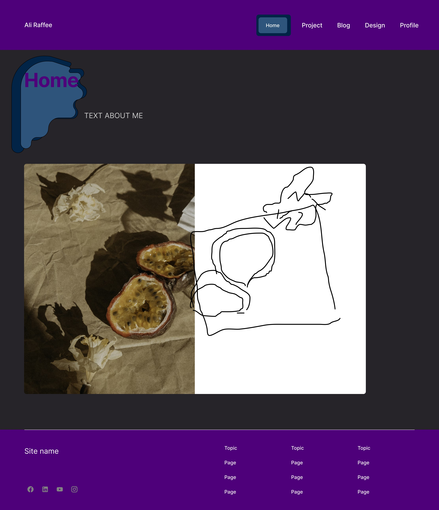
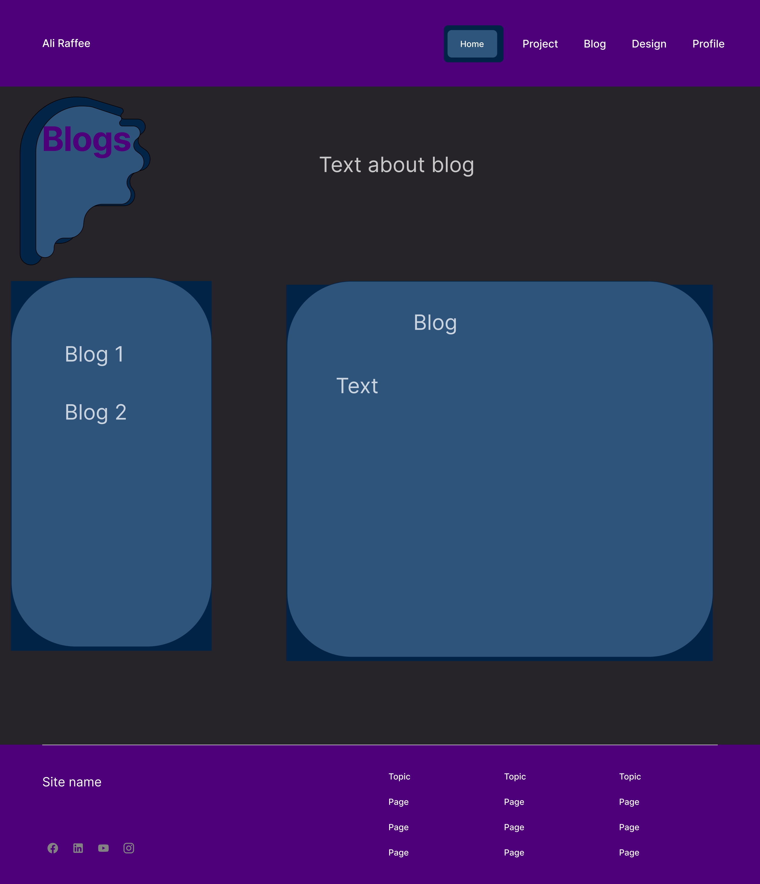
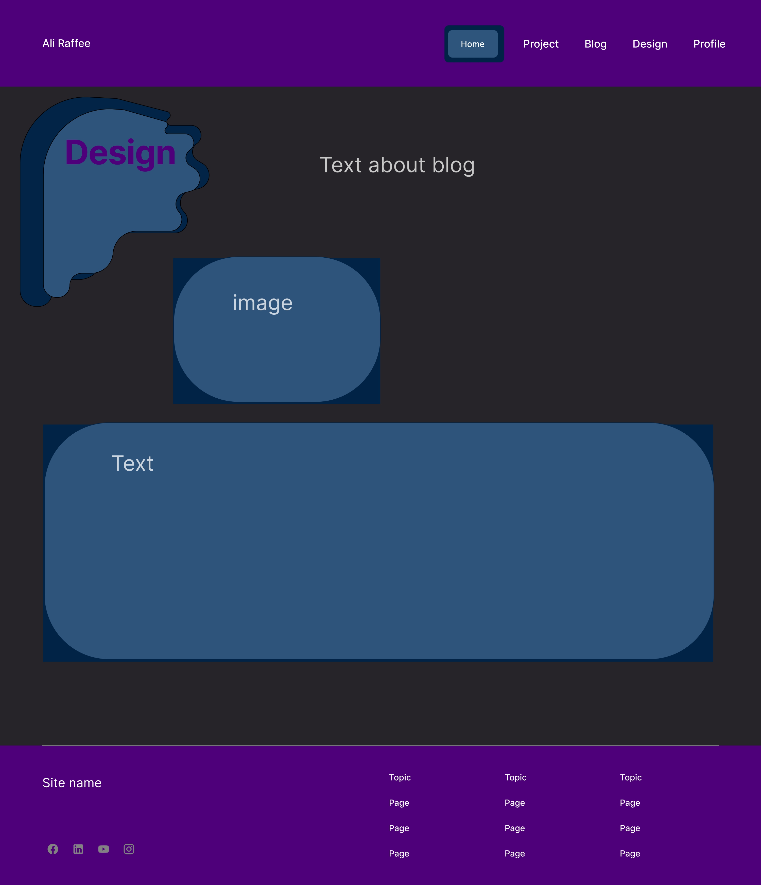
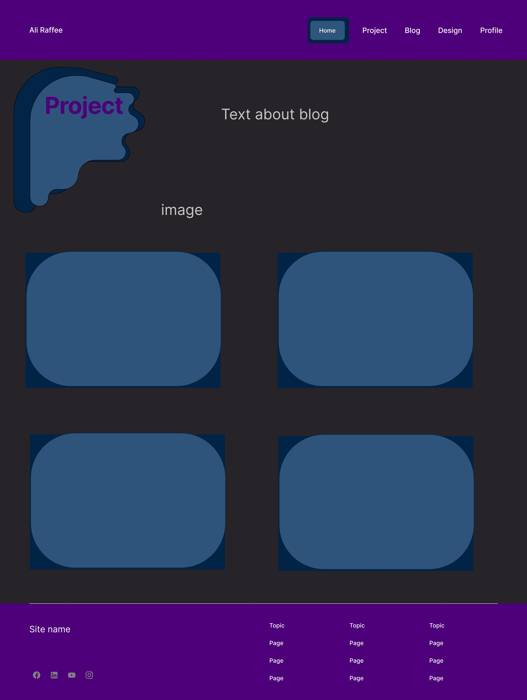

Looking back at the wireframes I originally created, it's clear that I was quite confused about good design practices and what I actually liked about other websites. My initial design was impractical because it didn’t even include a navigation bar. I relied on single links scattered vertically across the page to connect to other sections. Without setting a consistent structure for my website, it became difficult to navigate, and as a result, it lacked functionality.
I wasn’t sure how to guide users through my site, so I added awkward columns at the bottom of the visible page as a poor attempt at navigation. At that stage, I didn’t yet understand the purpose of footers or how to use other visual cues that could look much cleaner and more intentional. For example, I could have used simple borders around the top and sides of the page to visually suggest scrolling, or even a transparent arrow that subtly fades downward as a gentle hint. I’ve since realized that most users naturally expect a page to be scrollable unless it's clearly shown otherwise, rather than assuming it's static.
Another issue with my wireframes was that they included elements that weren’t actually HTML, because I wasn’t sure what should be handled with CSS, JavaScript, or HTML. This was simply due to a lack of experience at the time.
The biggest struggle for Assignment 1 was figuring out the design and actually filling out the different pages with meaningful content. I found it difficult to plan out the structure of each page and decide what belonged where, especially since I wasn’t sure how to create a logical flow or what information was unnecessary.
I also found that working with images and navigation within a page was particularly intimidating. Trying to create a page that allowed users to find the information they were looking for while also keeping the content organized and not overwhelming was a huge challenge. Each page risked becoming overloaded with information. On top of that, making it possible to jump between different sections without cluttering the page with too many links was tough.
It was difficult to balance showing large amounts of information versus offering brief summaries or previews before diving into detail. In the end, I chose to cut a lot of information and instead included links at the top of each page that direct users to different parts of the content. I also made use of icons to visually represent and break up information in a way that makes the site easier to explore.
Design Section
This website was created as a portfolio to showcase my work and achievements so far. My design is focused on creating an intuitive and simple way to explore everything I’ve done. I want to strike a balance between being professional and relaxed, as the site should represent me personally while still appealing to those, I want to showcase it to.
2a. User Interface (UI):
A navigation bar that is always present and consistent across all pages.
Icons for coding languages I am proficient in, acting as visual cues for my technical skills.
A white background paired with pastel colours, giving a clean, minimal look that highlights content without overwhelming it.
Rounded corners used throughout to create a friendly and relaxed feel.
Standard components like a header and footer, contributing to a well-organized and easy-to-navigate layout.
Although I haven’t finalized the typography yet, I’m aiming for a clean, modern font that works well with the soft pastel theme and ensures good readability.
2b. User Experience (UX):
Users should be able to browse smoothly, whether on desktop or mobile.
A sticky navigation bar allows quick access to different sections without having to scroll back up.
Clear contact options, making it easy for users to get in touch with me directly.
4. Reference Material and Inspirations
One of my main inspirations is Adham Dannaway's website.
What I like:
The clean and simple layout.
Effective use of space and minimalism, keeping things uncluttered.
The homepage image that cleverly shifts between programming-focused and creative-focused visuals — a great way to represent a dual skill set.
What I don’t like:
Some sections feel a bit too formal and robotic, which isn’t the vibe I’m going for. I want something more inviting and casual.
Although I haven’t chosen a final font yet, I’ve already put together a color palette that will define the site's visual style:
Comparing those early wireframes with my current designs, I can see a significant improvement in how I approach both structure and user experience. My new wireframes are much more organized, featuring clearly defined sections and consistent layouts across pages. Each page now has a specific purpose and is properly titled, helping users know where they are and what to expect. The pages I now include are:
Homepage: Introduction to who I am, with clear text about me and navigation to other sections.
Blogs Page: A space to share blog posts, with placeholders for text and blog titles.
Design Page: Dedicated to showcasing my design work, including space for text descriptions and images.
Projects Page: A gallery-style page to highlight key projects, including descriptions and supporting visuals.
Profile Page: Focused on my background, achievements, and personal statement, with additional text and images.
This new structure demonstrates a clearer understanding of content mapping and user flow. Each page connects logically to the others, and I now have a navigation bar that is consistent across all pages — something I had completely missed in my early wireframes. The navigation bar makes it easy for users to move between pages without frustration.
Design and User Experience (UX) Considerations
In redesigning the wireframes, I focused heavily on improving the user experience (UX). I considered how users would move through the site, ensuring that each page is easy to access and that information is presented in a way that doesn't overwhelm the reader. I also included space for visual elements like images and icons, which I previously found intimidating but now recognize as essential for breaking up text and making the site visually engaging.
By creating more structured wireframes, I also realized the importance of balancing functionality with creativity. My goal has always been to create a portfolio that is both professional and reflective of my personal style, and I believe my current designs are much closer to achieving that balance.
Conclusion
Overall, my current wireframes show that I have developed a much better understanding of web design principles, including usability, layout consistency, and navigation. I moved from confusing, scattered designs to a thoughtful and user-friendly structure that better serves the purpose of my portfolio. This process has taught me the importance of planning, consistency, and focusing on the user experience when designing a website. Moving forward, I will continue to refine these wireframes as I translate them into a fully functional site.

Current wireframe layout for the homepage. I will have an image of myself that will be half drawn and half a real image. This willl serve to show both my engineering and digital arts specialties. When hovered over, that side wil expand ie: the image will be completely drawn.

Current wireframe design for the blogs section. When a blog title is selected on the left, the text will be injected into the right blog

Current wireframe concept for the design page.

Current wireframe for the development portfolio section. The images will show the cover image of my project and the name. When hovered over more text and information will be presented
Looking at my current wireframes, I can see a significant improvement in my design skills and understanding of web development principles. The wireframes are much more organized and structured, with clear sections and consistent layouts across pages. I now have a navigation bar that is present on all pages, making it easy for users to move between different sections of the site.
I have also improved the user experience by including space for visual elements like images and icons, which help break up text and make the site more engaging. I have focused on creating a balance between functionality and creativity, ensuring that the site is both professional and reflective of my personal style.
Overall, I am pleased with the progress I have made in designing my portfolio website. I have learned a lot about web design principles and user experience, and I am excited to continue refining my wireframes as I work towards creating a fully functional site.
However, I do see room to improve. The contrast I have is quite low. I'm not currently sure how to blend having colours that are similar against colours that are different whilst making it still look appealing. I think I may have chosen too many colours as a first attempt at using colours. I will now try to use fewer colours and have a white background so most colours can stand out.
After beginning to bring CSS into my design, I realized that the colours I had originally chosen weren’t very appealing. The contrast was quite low, and the palette lacked vibrancy. I started to rethink my colour choices, reducing the number of colours and refining the type of colours I used. I still wanted to stick to the mood I originally aimed for, so I kept the black background with white body text, which gives the site a clean, modern feel while maintaining good readability.
As I began applying my styles, I noticed some layout and spacing issues that didn’t feel right in the browser, even though they worked in the wireframes. I made adjustments to padding, margins, and section spacing to give elements more room to breathe. I also decided to break up long text blocks using cards and containers to improve the structure and visual flow.
The button styling went through a few iterations as well. I experimented with hover states to make sure they felt interactive without being too flashy. I wanted everything to feel balanced, so I kept the font choices and text sizes consistent across the site.
Overall, while I stuck to the general layout and purpose from the original design plan, the implementation process helped me refine the visual details and usability. The end result is a more cohesive and responsive design that still reflects the goals I started with: clarity, minimalism, and personality.
I've realised that the original index page i want to use wont be applicable for the css website as the picture functinality i wnat to implament requires javascript. Without this it makes the index page quite redundant. i have therefore removed it for this submission and have put the profile page as the index/homepage.
I have decided to leave out the essay page as it is just empty, this would be a redundant and useless button that could add confusion to the website.